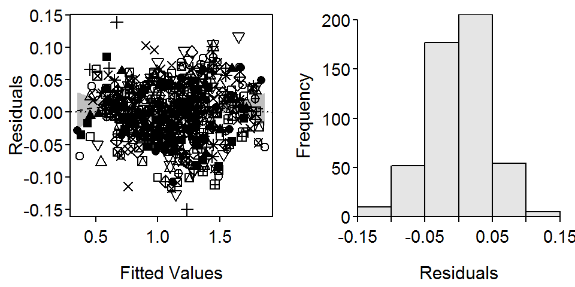
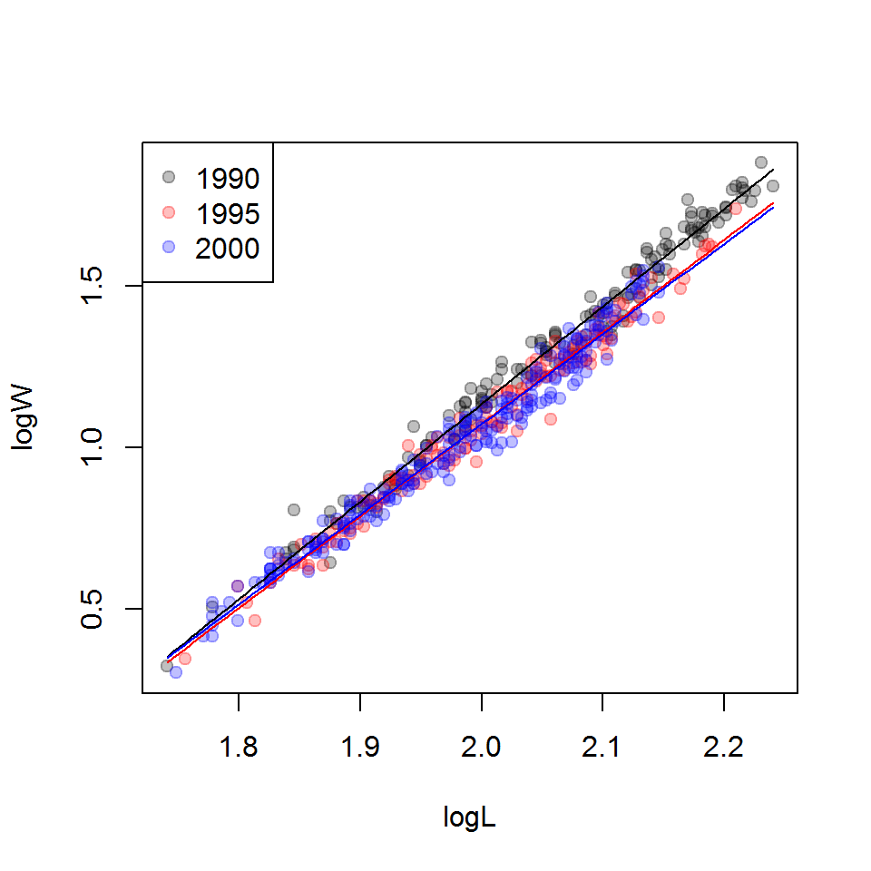

Dummy variable regression (DVR) was introduced in Chapter 7 of Introductory Fisheries Analyses with R in the context of determining if the slope and y-intercept parameters of weight-length relationship regressions differed between fish captured in two different years. That analysis may be extended to more than two groups, though more dummy variables are required and special methods are needed to determine which pairs of groups (if any) differ. This supplement demonstrates how to extend the DVR to more than two groups.
Functions used in this supplement require the packages shown below.
> library(FSA)
> library(dplyr)
> library(car)Weights (g) and total lengths (mm) from Ruffe (Gymnocephalus cernuus) captured in the St. Louis River Harbor (Minnesota and Wisconsin) were used in Chapter 7 and will also be used in this supplement. These data are from Ogle and Winfield (2009) and are in RuffeSLRH.csv. To eliminate within-season variability, only Ruffe captured in July are used here. Additionally, fish from only three years (1990, 1995, and 2000) were extracted, a factored version of year was created, the common logarithms of weight and length were created, and the fishID, month, and day variables were removed to save space in the output.
> ruf <- read.csv("RuffeSLRH.csv") %>%
filterD(month==7, year %in% c(1990,1995,2000)) %>%
mutate(fYear=factor(year),logW=log10(wt),logL=log10(tl)) %>%
select(-fishID,-month,-day)
> headtail(ruf) year tl wt fYear logW logL
1 1990 55 2.1 1990 0.3222193 1.740363
2 1990 60 3.2 1990 0.5051500 1.778151
3 1990 69 4.5 1990 0.6532125 1.838849
501 2000 136 35.4 2000 1.5490033 2.133539
502 2000 140 30.2 2000 1.4800069 2.146128
503 2000 140 36.2 2000 1.5587086 2.146128The number of dummy variables required to represent \(k\) groups is \(k-1\). Thus, in Chapter 7, only one dummy variable was required to represent the two groups. In this supplement, three groups (the years) are being examined and, thus, two dummy variables are needed. For example, lm() will ultimately treat the “1990” group as the reference group and create two dummy variables as follows
\[ fYear1995 = \left\{\begin{array}{l} 1 \text{, if captured in 1995 }\\ 0 \text{, if NOT captured in 1995 } \end{array} \right. \]
\[ fYear2000 = \left\{\begin{array}{l} 1 \text{, if captured in 2000 }\\ 0 \text{, if NOT captured in 2000 } \end{array} \right. \]
These dummy variables are each combined with the \(log_{10}(L)\) covariate to construct the following ultimate full model
\[ \begin{split} log_{10}(W_{i}) &= log_{10}(\alpha) + \beta log_{10}(L_{i}) \\ &\mspace{16mu}+ \delta_{1} fYear1995 + \delta_{2} fYear2000 \\ &\mspace{16mu}+ \gamma_{1} fYear1995*log_{10}(L_{i})+ \gamma_{2} fYear2000*log_{10}(L_{i}) + \epsilon_{i}\quad \quad \quad \quad \text{(1)} \end{split} \]
Substitution of appropriate values for the dummy variables into Equation 1 shows how Equation 1 simultaneously represents the weight-length relationship regressions for all three years (). From these submodels, it is apparent that \(\alpha\) is the y-intercept for the reference (e.g., 1990) group, \(\beta\) is the slope for the reference group, \(\delta_{i}\) is the difference in y-intercepts between the \(i\)th and reference groups, and \(\gamma_{i}\) is the difference in slopes between the \(i\)th and reference groups. By extension, the interaction variables measure differences in slopes and the dummy variables measure differences in y-intercepts.
Table 1: The submodels by capture year represented by the full model.
| Year | fYear1995 | fYear2000 | Submodel (\(log_{10}(W_{i})=\)) |
|---|---|---|---|
| 1990 | 0 | 0 | \(log_{10}(\alpha) + \beta log_{10}(L_{i})\) |
| 1995 | 1 | 0 | \((log_{10}(\alpha) + \delta_{1}) + (\beta + \gamma_{1})*log_{10}(L_{i})\) |
| 2000 | 0 | 1 | \((log_{10}(\alpha) + \delta_{2}) + (\beta + \gamma_{2})*log_{10}(L_{i})\) |
The model in Equation 1 is fit with lm() using a formula of the form y~x*factor exactly as described in Chapter 7 (again noting that lm() will create the appropriate dummy and interaction variables).
> fit1 <- lm(logW~logL*fYear,data=ruf)The linearity and homoscedasticity assumptions (Figure 1-Left) and normality assumption (Figure 1-Right) are largely met with this model.
> residPlot(fit1,legend=FALSE)
Figure 1: Modified residual plot (Left) and histogram of residuals (Right) from fitting a dummy variable regression to the log-transformed weights and lengths of Ruffe captured in 1990, 1995, and 2000.
An ANOVA table is constructed (using Anova() from car) and interpreted (sequentially starting at the bottom of the table) as described in Chapter 7.
> Anova(fit1)Anova Table (Type II tests)
Response: logW
Sum Sq Df F value Pr(>F)
logL 43.529 1 22278.435 < 2.2e-16
fYear 0.451 2 115.429 < 2.2e-16
logL:fYear 0.052 2 13.395 2.159e-06
Residuals 0.971 497 From these results it is apparent that the interaction term is a significant predictor in the model. In relation to Equation 1 this suggests that at least one of \(\gamma_{1}\) or \(\gamma_{2}\) is significantly different than zero, which implies that the slope of the relationship for fish captured in 1995, 2000, or both differs significantly from the slope for fish captured in 1990. Additionally, it is possible that the slopes for fish captured in 1995 and 2000 also differ, but this cannot be assessed with this model.
The ANOVA table for the fit of the full model is useful for determining if there is some difference in the regression model parameters among groups, but it cannot specifically identify where those differences occur. Specific differences are identified in the next section.
> ## Base plot
> transp <- 1/4
> clrs <- c(rgb(0,0,0,transp),rgb(1,0,0,transp),rgb(0,0,1,transp))
> plot(logW~logL,data=ruf,pch=19,col=clrs[fYear])
> ## Fitted lines
> ( cfs <- coef(fit1) ) (Intercept) logL fYear1995 fYear2000
-4.9144676 3.0251636 0.2817809 0.3942964
logL:fYear1995 logL:fYear2000
-0.1718633 -0.2285159 > minx <- min(ruf$logL)
> maxx <- max(ruf$logL)
> curve(cfs[1]+cfs[2]*x,from=minx,to=maxx,col="black",add=TRUE)
> curve((cfs[1]+cfs[3])+(cfs[2]+cfs[5])*x,from=minx,to=maxx,col="red",add=TRUE)
> curve((cfs[1]+cfs[4])+(cfs[2]+cfs[6])*x,from=minx,to=maxx,col="blue",add=TRUE)
> ## Add legend
> legend("topleft",levels(ruf$fYear),pch=19,col=clrs)
Ogle, D. H., and I. J. Winfield. 2009. Ruffe length-weight relationships with a proposed standard weight equation. North American Journal of Fisheries Management 29:850–858.